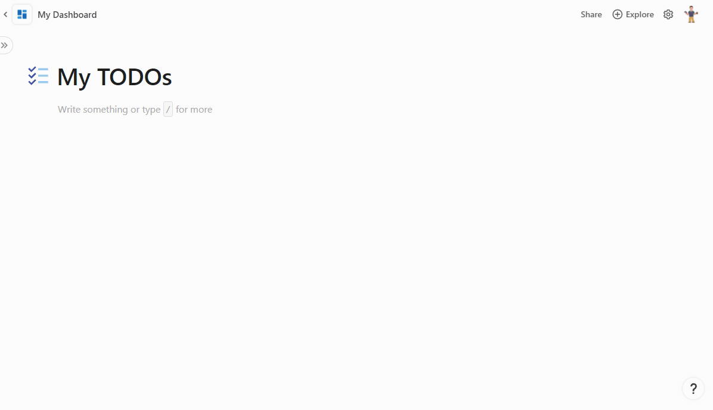

Add sync tables¶
Tables are one of the most powerful features of Coda, and many times people use them to track items that are also represented in other systems. For example, you may have a table of upcoming events, each of which is already listed in a company calendar. Sync tables allow you to define a special type of table where the rows are automatically synced from an external data source such as an API.
Using sync tables¶
Sync tables are added directly to the document, usually by dragging them in from the side panel. Navigate to Explore > Packs & import > {Pack name} and drag the table into the canvas.

If the sync table doesn't have any required parameters it will start syncing immediately, otherwise you'll have to configure it first. The data in the table can be synced manually or set up to sync automatically at regular intervals.
Multiple syncs
Each sync table can only be added once to a document. If you want to sync data from multiple accounts or with different parameters you can add additional syncs to the table. In the table options pane click the Add another sync button and configure the settings. The results from all syncs will be appended to the same table, but you can use views and filters on that table to display them separately.
Creating a sync table¶
A sync table consists of three main parts: the schema for each row of data, the sync table definition, and the formula that populates the table.
Define the schema¶
Each row in a sync table corresponds to an item in an external data source. For example, the Todoist sample has one sync table for tasks and another for projects. For each table you must define a schema that represents the data you'll be syncing for that item. See the Schemas guide for more information about defining and using schemas.
The item is displayed as a chip in the first column of the sync table, and it contains the complete set of synced data. Properties of the schema designated as featured are automatically broken out into their own columns, but these can be removed or added to by the user later.
The schema used in a sync table can be shared by other building blocks in your Pack, like a formula or column format. Even when the schema is only used by the sync table, we recommend you define it as a separate variable in your code for readability and future reuse.
const TaskSchema = coda.makeObjectSchema({
// ...
});
Dynamic schemas
For some data sources it isn't possible to know the shape of the data upfront, and it can only be determined at runtime. In these cases instead of defining your schema upfront you can generate it dynamically. See the Dynamic sync tables guide for more information.
Define the sync table¶
The sync table itself is defined using the addSyncTable() method:
pack.addSyncTable({
name: "Tasks",
schema: TaskSchema,
identityName: "Task",
formula: {
// ...
},
});
It includes the name of the sync table, the schema for each row, and other metadata. The identityName property will be explained in the Identity section below.
Write the sync formula¶
Inside each sync table definition is a formula definition, detailing the hidden formula used to sync data into the sync table. If you aren't already familiar with creating formulas, read the Formulas guide first.
pack.addSyncTable({
// ...
formula: {
name: "SyncTasks",
description: "Sync the user's tasks.",
parameters: [],
execute: async function ([], context) {
// ...
}
},
});
This formula fetches items from the external data source, adjust them to fit the schema, and returns them. The return value must be a SyncFormulaResult, which is an object where the result property contains the array of item objects.
pack.addSyncTable({
// ...
formula: {
// ...
execute: async function ([], context) {
let url = "<URL to pull data from>";
let response = await context.fetcher.fetch({
method: "GET",
url: url,
});
let items = response.body.items;
// Adjust the items to fit the schema if required.
return {
result: items,
}
}
},
});
On each sync your code must return the full set of items, and Coda will determine how to update existing rows, remove old rows, etc. This could take a long time for large datasets or slow APIs, and the Long-running syncs section has more information on how to handle this.
Naming¶
The name of a sync table can only contain letters, numbers, and underscores. By convention sync table names are written in upper camel case, like BugReports. In some areas of the UI, such as the settings pane, the name will be rewritten to add spaces ("BugReports" => "Bug Reports") for readability. We recommend that you don't prefix your table with the name of your Pack, as that is done automatically in some contexts.
Identity¶
Every sync table is required to specify an identityName, which is a unique identifier for the type of item being synced in that table. By convention this is usually the singular form of the name of the item being synced. For instance, a "Tasks" table would use an identity name of "Task". This identity name is used to reference the table when creating row references or updating rows with actions.
By default the identity name is also used as the column name for the first column of the sync table, which contains the synced item as a chip. You can use a different name for the column by setting dynamicOptions.entityName on the sync table.
Row limits¶
Each sync table has a user-defined maximum number of rows, which defaults to 1000 but can be set as high as 10,000. Any items returned by your sync table beyond that limit will be dropped.
Long-running syncs¶
The sync formula that populates a sync table will timeout after a minute, but for some data sources it may take longer to retrieve all the results. In these cases you can utilize the continuation mechanism of sync tables to break your sync up into multiple executions. A continuation is like a save point, allowing you to record where you left off and then pick up again later.
If at the end of an execution there are more items left to sync, return a custom continuation object along with the synced items. Coda will then re-run your sync formula, passing in the previous continuation object. The synced items from each execution will be appended to the table. This process will continue until no continuation object is returned or the table reaches the row limit.
pack.addSyncTable({
// ...
formula: {
// ...
execute: async function ([], context) {
let previousContinuation = context.sync.continuation;
// If there is a previous continuation, pick up where you left off.
// Otherwise start from the beginning.
// Sync some items...
let nextContinuation = undefined;
// Determine if there are more items left to sync...
if (moreItemsLeft) {
nextContinuation = {
// Save your place...
};
}
return {
result: items,
continuation: nextContinuation,
}
}
},
});
The contents of the continuation are flexible and will depend on the API to the external data source, but usually involve offsets or page tokens. The continuation must be an object of type Continuation, which allows for storing string and number values. Continuations are not designed for persisting large amounts of data between executions, so we recommend against using a task queue pattern.
Approximating two-way sync with actions¶
The sync process used by sync tables is one-way only; data is pulled in from an external source and is displayed in a read-only column. It's not possible to directly edit the items in the sync table and sync the changes back out.
You can approximate a two-way sync using buttons with custom actions. For example, the Todoist sample has an UpdateTask action that updates the name of a task. Sync tables can't include buttons directly, but Makers can add them on to a sync table and sample docs can demonstrate this pattern.
If an action updates an item that has been synced, it’s natural to want to see the row for that synced item get updated immediately, rather than having to wait for the next sync. To address this, you can have an action formula return an Object, representing the item after the changes have been applied. If this object uses the same schema as a sync table, when the formula completes, Coda will look for a row in that sync table and update the row’s value with the return value of the action. The schema must have the identity.name field populated and it must match the identityName field of the sync table.
const TaskSchema = coda.makeObjectSchema({
// ...
identity: {
name: "Task",
},
});
pack.addSyncTable({
name: "Tasks",
schema: TaskSchema,
identityName: "Task",
// ...
});
pack.addFormula({
name: "UpdateTask",
description: "Updates the name of a task.",
// ...
resultType: coda.ValueType.Object,
schema: TaskSchema,
isAction: true,
execute: async function ([taskId, name], context) {
// Call the API to update the task and get back the updated content.
let task = updateTask(taskId, name, context);
// The existing row will be updated with this value.
return task;
},
});
Referencing rows from other sync tables¶
It's often the case that the different synced items in a Pack are related to each other. For example, a Pack may have sync tables for projects and tasks, where each task belongs to a single project. Using references you can connect these two tables together. References in sync tables work like Lookup columns in regular tables.
A reference must specify the identity of the target table as well as the ID of the target row. If that row has already been synced to the doc, then the reference is replaced with the data from that row. Otherwise a grayed out chip is displayed, indicating that the referenced row hasn't been synced yet.

See the Schemas guide for more information on how to create references in your table schema.
Account-specific fields¶
Some APIs vary the shape of the data returned based on the account being accessed. For example, an issue tracker may allow users to define custom fields for their bug reports, which the API also returns. A sync table must have a defined schema that represents the data for each item, but it is possible to expand that schema to accommodate these variations by using a dynamic schema. See the Dynamic sync tables guide for more information on how to use this feature.